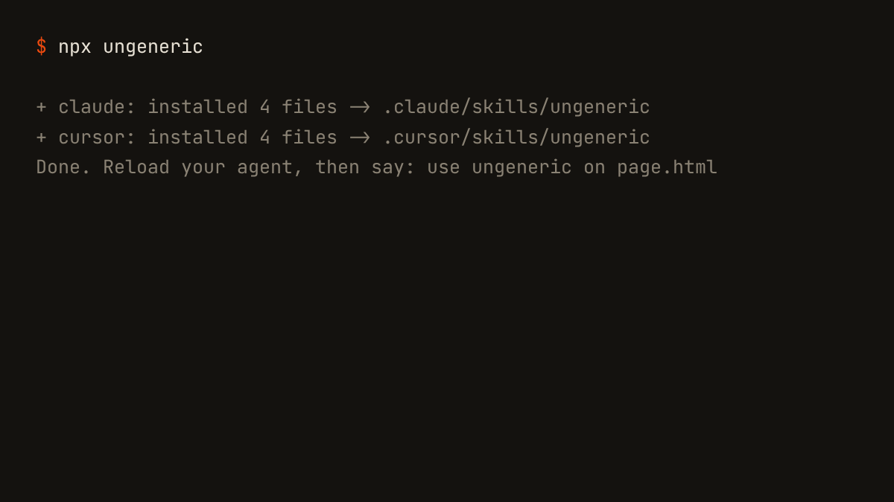

A skill for your AI coding agent
Don't just detect AI slop. Fix it and prove it.
Say "use ungeneric" in Claude Code, Cursor, Codex, Copilot, Gemini, Antigravity or OpenCode. Your agent audits the page on 32 slop checks, rebuilds it with one of sixteen real design systems, then re-audits the result to prove the fix. Free, local, no account, no API key.
$ npx --yes github:saladi-siddharth/ungeneric
Installs the skill into each coding agent it detects on your machine.
How it works
Detection alone is homework. Ungeneric closes the loop: audit, rebuild, then prove the score actually dropped.
STEP 1 — AUDIT
Finds the slop
32 source checks: purple gradients, glow shadows, emoji icons, default fonts, stock marketing copy, generic heroes, card grids, "AI-powered" copy and more. --render adds 12 computed-style checks in headless Chromium.
STEP 2 — REBUILD
Fixes it for you
Restyles the page with a real design system, or recomposes heavy-slop pages into a new layout. Your content, links and claims survive; the layout, type, palette and motion do not.
STEP 3 — PROVE
Verifies the fix
Every rebuild is re-audited, and the CLI exits non-zero if the output did not improve. If it is not measurably better, it does not ship.
Same page, rebuilt
The same vibecoded SaaS page before and after Ungeneric. Words kept; design replaced.

Sixteen design systems
One command each. Every tile below is the same page, rebuilt by a different system.

The full loop, in your agent
Install, audit, rebuild, re-audit — one command each, inside the agent you already use.

Works where you work
One installer detects your agents and drops the skill into each one's skills folder. Reload the agent, then say the word.
What it is, honestly
A fair view of the unslop field, from each tool's own docs and source.
Where Ungeneric wins
- The only one that rebuilds the page itself, then proves the fix with a second audit.
- Deterministic: same input, same output, diffable in CI with --max-score.
- Free, offline, no model or API key needed.
- Works in the most agents: 7 coding agents, plus CLI and a local web tool.
Where the others win
- Creative range: steering skills like Impeccable invent a bespoke direction per brief; Ungeneric picks from 16 fixed systems.
- Detection breadth: sloplint tracks more raw tells; Ungeneric implements the high-signal ones.
- Nuance: a model judges intent; heuristics can false-positive on unusual but intentional markup.
The slop score is a heuristic — a conversation starter, not a judgment. Field-tested on 20 real public sites: SaaS, restaurants, blogs, schools, clinics, news.
Free and open source
Make your next page ungeneric.
One install. Then: "use ungeneric on index.html".